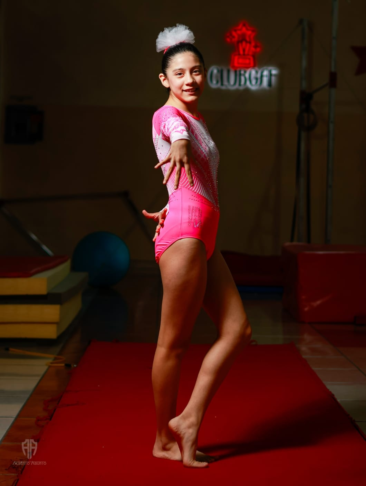
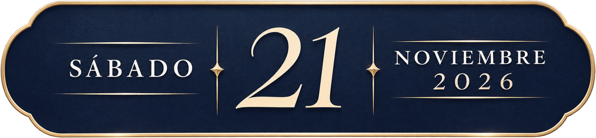
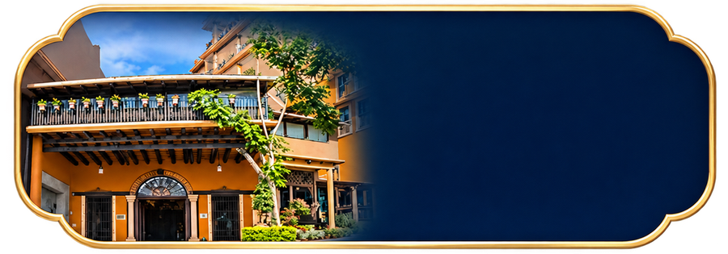
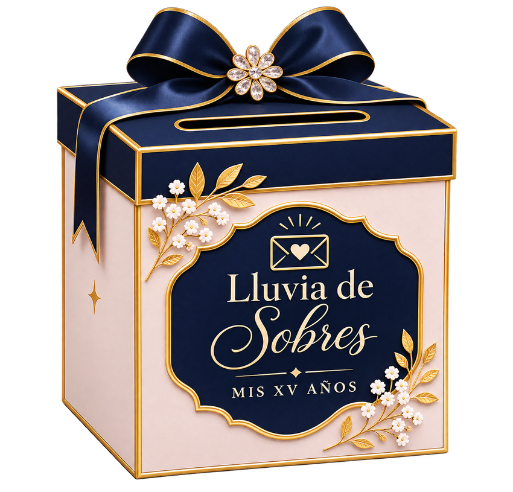

Misa
Ceremonia religiosa.

ROA BARRAGÁN

--DÍAS
--HORAS
--MINUTOS
--SEGUNDOS
CON MUCHO CARIÑO, INVITAMOS A
Nos encantará compartir esta celebración tan especial con ustedes.
CON LA BENDICIÓN DE DIOS Y EL AMOR DE
Mis papás
MI PAPÁ
Héctor Roa Ficache
MI MAMÁ
Sheylla Indira Barragán Corona
Y EL ACOMPAÑAMIENTO DE
Mis padrinos
MI PADRINO
Rafael Abraham Olmos García
MI MADRINA
Anaycari Dorantes Corona
NOS ENCANTARÍA QUE NOS ACOMPAÑARAS
La celebración
CEREMONIA RELIGIOSA
Parroquia San Pío X
18:00 horas
Av. Araucarias 75, Indeco Ánimas,
91190, Xalapa, Veracruz.

RECEPCIÓN
Salón Cascadas
Hotel Misión Xalapa
19:00 horas
Av. 20 de Noviembre 455, Modelo,
91040, Xalapa, Veracruz.
UNA NOCHE PARA RECORDAR
Programa del evento
Estos son algunos de los momentos que compartiremos.
Recepción de invitados
Bienvenida a nuestros invitados.
Entrada de Nicole
Comienza uno de los momentos más esperados.
Vals principal
Un momento especial para celebrar esta nueva etapa.
Vals familiar
Un vals para compartir con su familia.
Brindis
Un brindis a cargo de sus tíos
Christian Edsson Barragán Corona
&
Brenda Prissyla Barragán Corona
Cena
Vals de la muñeca
En compañía de su prima Ivana Hernández Dorantes.
Partida del pastel y lluvia de sobres
Compartiremos este momento especial.
Vals sorpresa con chambelanes
Apertura de pista con DJ
Continúa la fiesta y música con DJ.
UN DETALLE DE CARIÑO
Lluvia de sobres
Tu compañía es nuestro mejor regalo. Si deseas tener un detalle conmigo, tendremos lluvia de sobres durante la celebración.

UN POCO DE MÍ
Galería de mi infancia
Algunos recuerdos de cuando era pequeña.
Desliza para ver mis recuerdos · 1 de 15
Mi sesión Pre Quince
Desliza para recorrer la galería · 1 de 15
SERÁ UN HONOR CONTAR CONTIGO
Confirma tu asistencia
Por favor, confirma con Sheylla antes del 20 de noviembre de 2026.
Sheylla Indira Barragán Corona
228 856 0974
¿Podrás acompañarme?
Fecha límite: 20 de noviembre